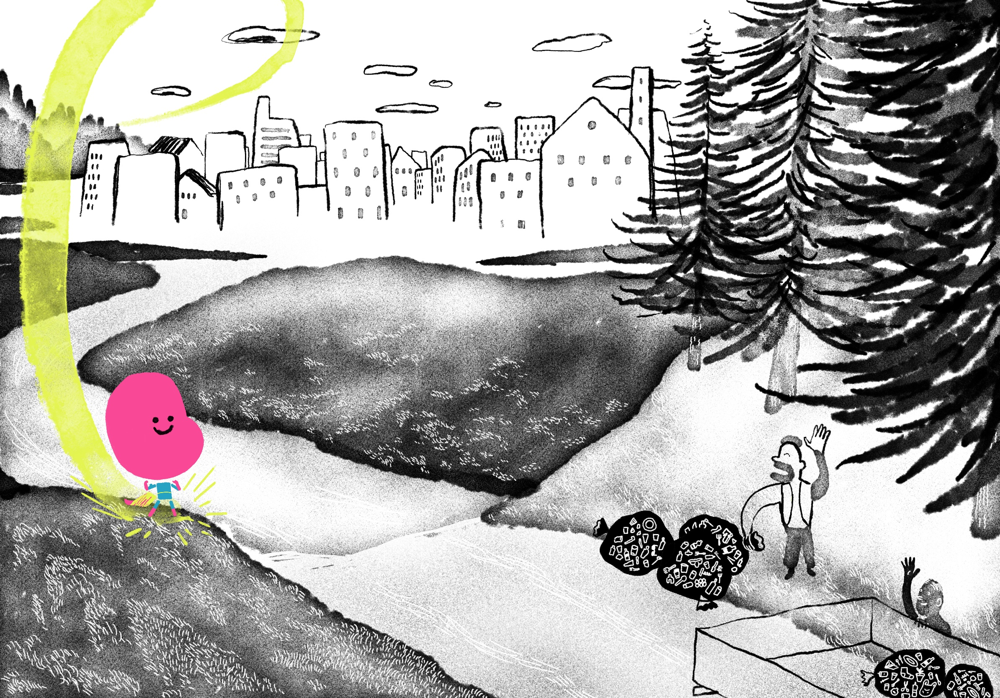

How Super Fluo began
The idea of a completely useless superhero - superfluous, as the Italian name suggests - began with a drawing by Lucio.

English edition
The totally useless superhero
Not all superheroes are the same. Super-Duper is convinced he has extraordinary powers: he can make flowers grow, move the Sun with yoga, and even stop the rain after days of intense concentration. But there is one person for whom he truly is a superhero: his beloved Granny. For her, Super-Duper finds a way to make flowers bloom, bring light into the day and, above all, make her laugh. A gentle story about care, attention and the small everyday powers that can make a real difference.
Buy from Amazon. External links open in a new tab.
Super Fluo is a story about superpowers that do not look like superpowers: small, everyday abilities that are almost invisible.
Super Fluo dreams of great adventures, but his most special talent emerges when he is with his Granny: listening to her, helping her, keeping her company and finding ways to make her feel good.
It is a book about attention and empathy, and what we can do for the people we love, even when we cannot fly, lift buildings or really stop the rain.

The idea of a completely useless superhero - superfluous, as the Italian name suggests - began with a drawing by Lucio.

Early storyboard sketches that became part of the finished book.

Notes, ideas and details that did not make it into the final version, but are still part of the story.
These selections refer to the Italian edition, Super Fluo; the exhibition features illustrations created for the book.

Super Fluo was selected for IBBY Italia Choice 2026 in the Picture Books category.
Official selection (PDF)
The Italian edition, Super Fluo, is among the books selected for Beautiful Italian Books 2026.

7 November 2026 – 14 February 2027
Lucio Notarnicola's illustrations for Super Fluo on display at Fondazione Štěpán Zavřel in Sarmede.
About the exhibitionItalian-language reviews, radio features and press mentions are listed on Super Fluo.